Plan de décaissement — guide de l'abonné
Pour la version 2026-04 de l'application · guide mis à jour le 21/11/2026
1. Présentation
Le Plan de décaissement projette, année par année, les revenus de votre retraite : rentes d'employeur, Régime de rentes du Québec (RRQ), Sécurité de la vieillesse (PSV), retraits de vos REER/FERR et CELI, et les impôts fédéral et du Québec qui en découlent.
Son point fort : il cherche le meilleur rythme de retrait de vos REER/FERR sur toute la période, pour payer le moins d'impôt possible tout en vous assurant le revenu visé. Il permet aussi de comparer plusieurs choix : date de départ, âge de début de la RRQ ou de la PSV.
Avertissement
Cette application produit une estimation d'un plan de décaissement à la retraite pour une personne ou un couple résidant au Québec (impôts fédéral, du Québec et, le cas échéant, français). Les résultats dépendent des hypothèses que vous saisissez et de règles qui comportent des simplifications.
Elle ne constitue pas un conseil financier, fiscal ou juridique. Ne prenez aucune décision importante sur la seule foi de ces résultats (date de retraite, début des rentes, retraits REER/FERR…) sans en avoir d'abord discuté avec votre planificateur financier.
Voyez plutôt cette simulation comme un outil de préparation : elle vous aide à comprendre votre situation, à explorer différents scénarios et à aborder vos rencontres avec votre planificateur de façon plus éclairée, avec les bonnes questions.
Ce qu'il vous faut
- Un ordinateur sous Windows 10 ou 11, avec environ 150 Mo d'espace libre.
- Une connexion Internet au premier lancement (ensuite, elle sert seulement à recevoir les mises à jour).
- Votre invitation : elle contient votre courriel et votre code d'activation.
- Vos documents de retraite à portée de main (voir la liste à la section Saisir votre situation).
2. Installation
- Téléchargez l'application à l'adresse indiquée dans votre invitation
(https://github.com/pfaye0366/plan-decaissement/releases/latest).
Sur cette page, sous « Assets », cliquez sur le fichier
PlanDec-….zip. - Extrayez le fichier : dans le dossier Téléchargements, faites un clic droit sur le fichier .zip,
puis Extraire tout…. Choisissez par exemple votre dossier Documents, puis Extraire.
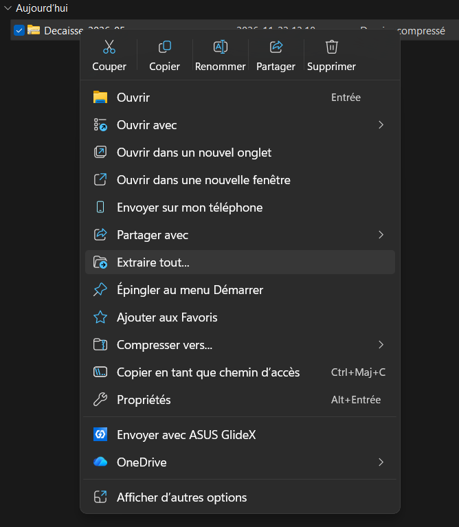
Clic droit sur le fichier .zip, puis « Extraire tout… ». Ne lancez pas le programme depuis l'intérieur du fichier .zip sans l'avoir extrait : il ne fonctionnerait pas.
- Ouvrez le dossier PlanDec obtenu et double-cliquez sur Plan de decaissement.exe. Astuce : faites un clic droit sur ce fichier puis Envoyer vers > Bureau (créer un raccourci) pour le retrouver facilement.
- Au premier lancement, Windows peut afficher « Windows a protégé votre ordinateur ».
Cliquez sur Informations complémentaires, puis sur Exécuter quand même.
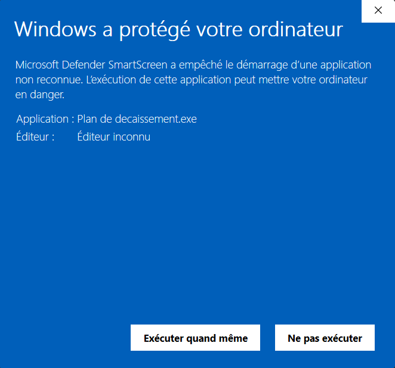
Message de Windows SmartScreen : « Informations complémentaires », puis « Exécuter quand même ». Ce message apparaît parce que le programme n'est pas signé par un éditeur commercial (une signature coûte plusieurs centaines de dollars par an). Il ne fait que des calculs sur votre ordinateur.
Si Windows bloque le programme sans proposer « Exécuter quand même » (message de Smart App Control, présent sur les ordinateurs récents sous Windows 11), la protection doit être suspendue le temps du premier lancement :
- Ouvrez Sécurité Windows (menu Démarrer), puis Contrôle des applications et du navigateur > Paramètres de Smart App Control, et choisissez Désactivé.
- Double-cliquez sur Plan de decaissement.exe, puis Exécuter quand même ; attendez que l'application s'ouvre dans le navigateur.
- Revenez dans Paramètres de Smart App Control et réactivez-le (Activé).
Le programme démarre ensuite normalement, même avec la protection réactivée. Ne laissez pas Smart App Control désactivé. Il faudra refaire ces étapes une fois à chaque nouvelle version.
- Une fenêtre noire s'ouvre, puis votre navigateur affiche l'application.
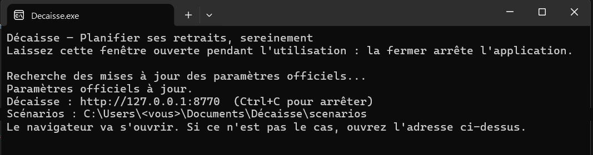
La fenêtre noire fait fonctionner l'application : laissez-la ouverte pendant l'utilisation. Laissez la fenêtre noire ouverte (vous pouvez la réduire) : la fermer arrête l'application. Pour quitter, fermez l'onglet du navigateur puis la fenêtre noire.
L'application s'affiche dans votre navigateur habituel, à l'adresse http://127.0.0.1:8770.
Cette adresse désigne votre propre ordinateur : rien ne passe par un site Web.
3. Premier lancement : activation
Au premier lancement, l'application demande votre courriel et votre code d'activation,
tels qu'ils figurent dans votre invitation (le code a la forme ABCD-2345 ; majuscules et espaces sans importance).
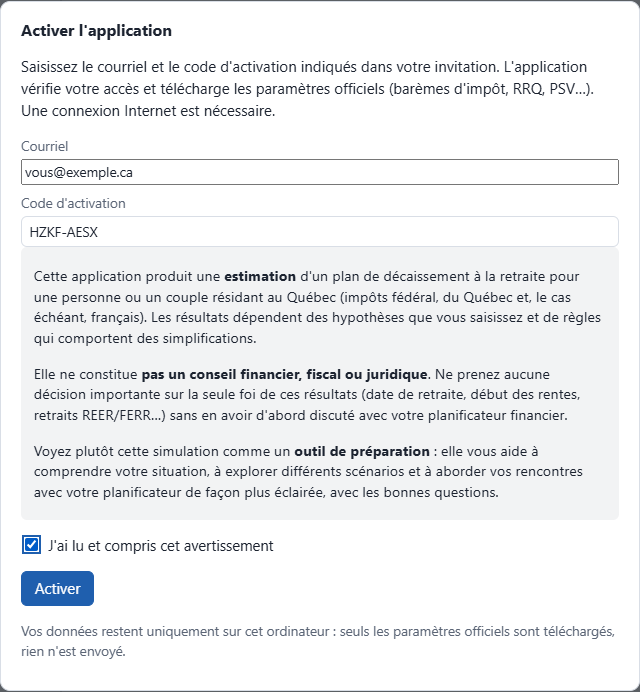
- Saisissez le courriel et le code.
- Lisez l'avertissement, puis cochez J'ai lu et compris cet avertissement.
- Cliquez sur Activer. L'application vérifie votre accès et télécharge les paramètres officiels (barèmes d'impôt, RRQ, PSV…).
L'activation ne se fait qu'une fois. Votre code n'est pas conservé : l'application garde seulement une empreinte chiffrée qui permet de vérifier votre accès lors des mises à jour.
Vous arrivez ensuite sur une fiche vierge. Le message rouge « À compléter » indique la prochaine information manquante ; il disparaît quand la fiche est complète.
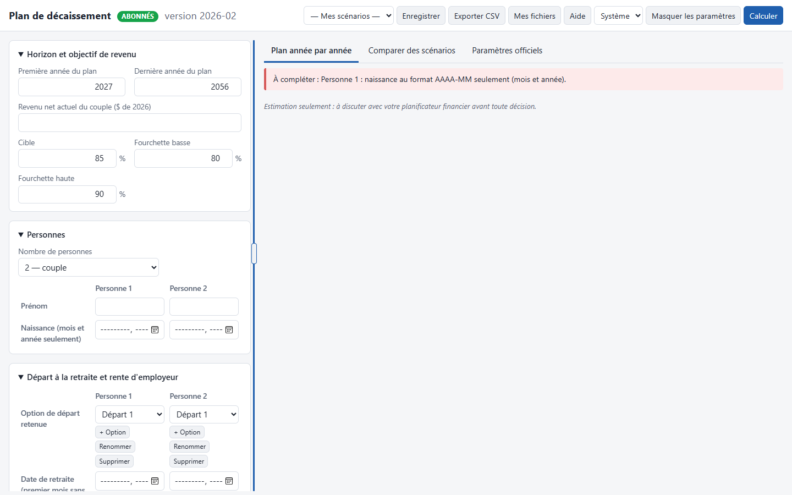
4. L'écran en un coup d'œil
Les exemples de ce guide utilisent un couple fictif, Sylvie et Martin. Sylvie, née en 1965, prendra sa retraite en juin 2027 avec une rente de son employeur. Martin, né en 1962, est déjà retraité.
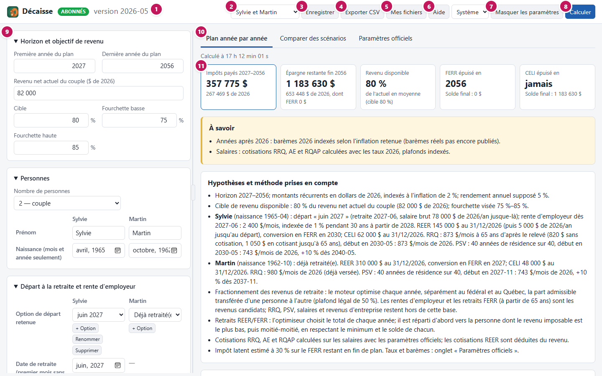
- ABONNÉS et le numéro de version de l'application.
- Mes scénarios : ouvre une simulation enregistrée.
- Enregistrer la simulation affichée.
- Exporter CSV : le tableau annuel, pour Excel.
- Mes fichiers : ouvre le dossier de vos simulations.
- Aide : ouvre ce guide.
- Masquer les paramètres : agrandit les résultats.
- Calculer : relance le calcul et l'optimisation.
- Le formulaire : votre situation, section par section.
- Les onglets : plan année par année, comparaison de scénarios, paramètres officiels.
- Les chiffres clés du plan.
Le calcul se relance aussi automatiquement quelques instants après une modification du formulaire. Le premier calcul après l'ouverture prend environ 30 à 60 secondes (chargement du moteur fiscal) ; les suivants, quelques secondes.
Le sélecteur Thème choisit un affichage clair ou sombre. La barre verticale entre le formulaire et les résultats peut être glissée pour élargir le formulaire (double-clic : largeur initiale).
5. Saisir votre situation
Les sections du formulaire s'ouvrent et se ferment d'un clic sur leur titre. Pour un couple, chaque section a une colonne par personne. Tous les montants récurrents sont en dollars d'aujourd'hui (2026) : l'application les indexe ensuite selon l'inflation choisie.
Documents utiles
- Le relevé de participation de la RRQ ou une simulation SimulRetraite (Mon dossier, Retraite Québec).
- L'estimation de la PSV (Mon dossier Service Canada) et vos années de résidence au Canada.
- Les relevés de vos REER, CELI et comptes de placement au 31 décembre.
- Vos droits de cotisation CELI inutilisés (Mon dossier de l'ARC).
- Le relevé ou l'estimation de votre régime de retraite d'employeur (rente mensuelle, rente temporaire, indexation).
Horizon et objectif de revenu
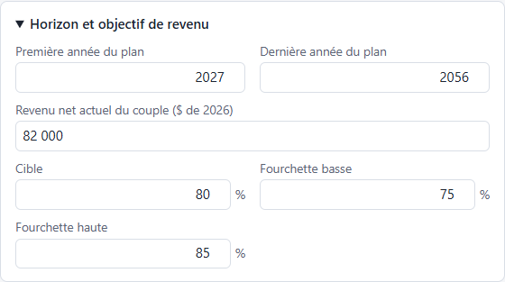
- Première et dernière année du plan : la période projetée (par exemple jusqu'à vos 90 ou 95 ans).
- Revenu net actuel : ce que vous (le couple) recevez aujourd'hui après impôts, en un an. C'est la référence du niveau de vie visé.
- Cible : le pourcentage de ce revenu visé à la retraite (souvent 70 à 85 %). La fourchette basse et haute laisse de la souplesse à l'optimisation : le revenu de chaque année reste entre les deux.
Personnes
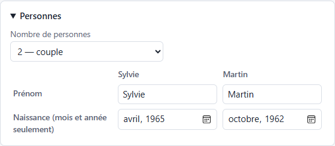
- Nombre de personnes : une personne seule ou un couple. Pour une personne seule, tout ce qui concerne le conjoint disparaît.
- Prénom et naissance : le mois et l'année seulement (le jour n'est jamais demandé).
Départ à la retraite et rente d'employeur
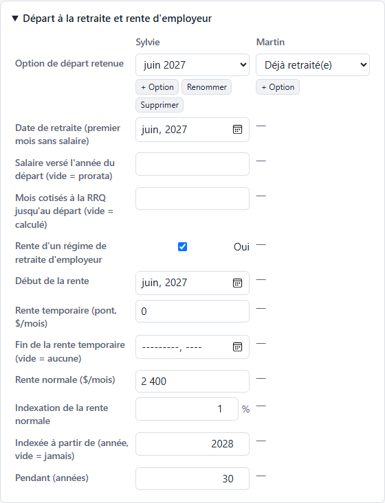
- Option de départ retenue : une option décrit un scénario de départ (date, rente). Le bouton + Option en ajoute une (par exemple « juin 2027 » et « janvier 2029 »), que vous pourrez comparer. Choisissez Déjà retraité(e) si la personne ne travaille plus.
- Date de retraite : le premier mois sans salaire.
- Salaire versé l'année du départ : laissez vide pour un calcul au prorata des mois travaillés.
- Mois cotisés à la RRQ jusqu'au départ : laissez vide, l'application les calcule.
- Rente d'un régime de retraite d'employeur : cochez Oui si vous en avez une, puis indiquez le début, l'éventuelle rente temporaire (prestation de raccordement versée jusqu'à 65 ans, par exemple), la rente normale mensuelle et son indexation (taux, année de début, durée).
Salaire et revenu d'entreprise
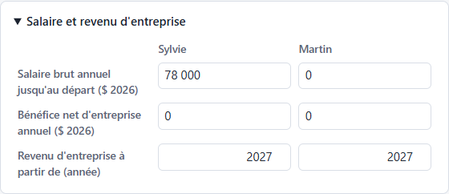
- Salaire brut annuel jusqu'au départ.
- Bénéfice net d'entreprise (travail autonome, par exemple) et l'année où il commence ; laissez 0 si vous n'en avez pas.
REER / FERR et CELI
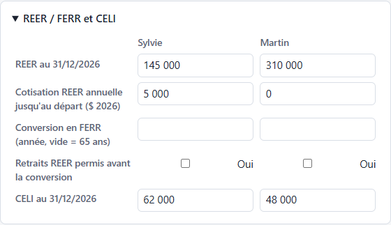
- REER au 31 décembre de l'année précédant le plan, et la cotisation annuelle jusqu'au départ.
- Conversion en FERR : l'année de conversion ; vide = l'année de vos 65 ans (la loi l'impose au plus tard à 71 ans). Après la conversion, le retrait minimum légal est appliqué chaque année.
- Retraits REER permis avant la conversion : cochez pour laisser l'optimiseur retirer du REER avant le FERR.
- CELI au 31 décembre.
RRQ (Régime de rentes du Québec)
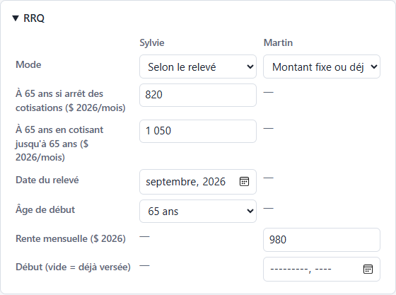
- Selon le relevé (si la rente n'est pas encore versée) : indiquez la rente estimée à 65 ans si vous arrêtez de cotiser et si vous cotisez jusqu'à 65 ans, la date du relevé et l'âge de début (60 à 72 ans). L'application estime la rente selon votre date de départ, puis applique la réduction avant 65 ans (−0,6 % par mois) ou la bonification après 65 ans (+0,7 % par mois).
- Montant fixe ou déjà versée : la rente mensuelle actuelle et, si elle n'a pas commencé, son mois de début.
PSV (Sécurité de la vieillesse)
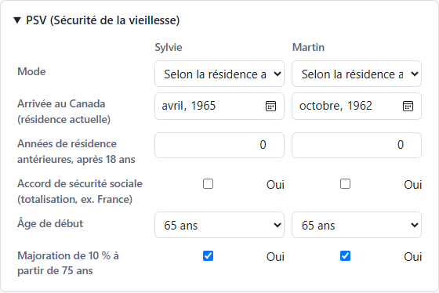
- Selon la résidence au Canada : le mois d'arrivée au Canada (si vous y êtes né, indiquez votre mois de naissance) et les années de résidence antérieures après 18 ans. La pleine pension demande 40 ans de résidence après 18 ans ; sinon, elle est proportionnelle. Cochez Accord de sécurité sociale si un accord avec un autre pays vous aide à atteindre les 10 ans minimum.
- Âge de début : de 65 à 70 ans ; chaque mois de report augmente la pension de 0,6 %.
- Grille selon l'âge : saisissez vous-même le montant mensuel prévu pour chaque âge de début (tiré de votre estimation Service Canada).
- Montant fixe ou déjà versée : la pension actuelle.
- Majoration de 10 % à partir de 75 ans : prévue par la loi ; laissez cochée.
La récupération de la PSV (pour les revenus élevés) est calculée automatiquement.
CELI et surplus
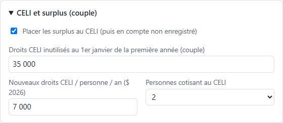
- Placer les surplus au CELI : les années où vos revenus dépassent la cible, le surplus est placé au CELI (dans la limite des droits), puis dans un compte non enregistré.
- Droits CELI inutilisés au 1er janvier de la première année, et les nouveaux droits annuels par personne.
- Personnes cotisant au CELI : 1 ou 2.
Hypothèses économiques
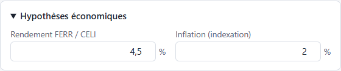
- Rendement annuel moyen de vos placements, après frais. Restez prudent : un écart d'un point change beaucoup le résultat sur 30 ans.
- Inflation : sert à indexer les rentes, les seuils fiscaux et votre revenu cible (2 % est la cible de la Banque du Canada).
Optimisation et options de calcul
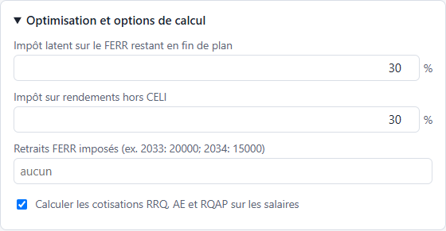
Ces réglages ne changent pas vos revenus : ils disent au programme comment juger un plan, et ce qu'il doit imposer ou calculer. L'optimisation choisit, pour chaque année, combien retirer du REER/FERR afin d'obtenir la plus grande épargne finale nette d'impôt (en dollars de 2026), tout en vous assurant le revenu visé.
- Impôt latent sur le FERR restant en fin de plan (30 % par défaut). Le FERR n'a jamais été imposé :
un solde de 300 000 $ à la fin du plan ne vaut pas 300 000 $, car il sera imposé un jour (au plus tard au décès du
dernier conjoint, où tout le solde s'ajoute au revenu de l'année). L'optimisation compare donc deux choix :
retirer maintenant (impôt au taux marginal de l'année, surplus placé dans le CELI, où il ne sera plus jamais
imposé) ou laisser dans le FERR (imposé plus tard à ce taux latent).
- Plus ce taux est élevé, plus le programme vide le FERR tôt, en profitant des années où votre taux marginal est bas : souvent entre la retraite et le début de la RRQ et de la PSV, ou l'année des 65 ans, quand le fractionnement des revenus de retraite devient possible au Québec. Un gros retrait une année donnée, en bonne partie placé dans le CELI, vient généralement de là.
- Plus il est bas, plus l'argent reste dans le FERR.
- Conseil : essayez 25 %, 30 % et 40 %. Si le plan change peu, votre stratégie est solide ; s'il change beaucoup, parlez-en avec votre planificateur (le taux réel dépend de votre succession et de l'ordre des décès).
- Impôt sur les rendements hors CELI (30 % par défaut). Quand vos revenus dépassent vos besoins et que vos droits CELI sont épuisés, le surplus va dans un compte non enregistré (colonne « Placé non enr. »). Ses rendements sont imposés chaque année à ce taux simplifié : à 5 % de rendement, il croît d'environ 3,5 % par an. Ce réglage change peu les décisions ; une valeur plus basse (20 à 25 %) se défend si ces placements rapportent surtout des gains en capital ou des dividendes canadiens.
- Retraits FERR imposés (par exemple
2031: 40000; 2032: 35000). Vous remplacez le choix du programme pour les années indiquées ; les autres années restent optimisées en tenant compte des vôtres.- Les montants sont en dollars de l'année (pas en dollars de 2026).
- Le minimum obligatoire du FERR et le solde disponible restent respectés.
- Utile pour étaler un gros retrait proposé une seule année : l'impôt est plus régulier et vous évitez des acomptes provisionnels, souvent pour un coût faible sur l'épargne finale. Comparez les deux résultats pour le mesurer.
- Vous pouvez aussi modifier directement la cellule « Retrait REER/FERR » du tableau annuel.
- Calculer les cotisations RRQ, AE et RQAP sur les salaires : laissez coché. Les retenues réelles sur la paie sont déduites des salaires, avec leur effet sur l'impôt (crédit ou déduction). Cela ne joue que les années où il y a un salaire.
6. Lire les résultats
Les chiffres clés
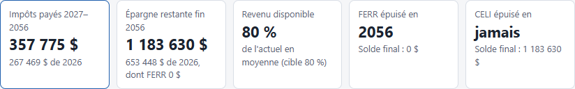
- Impôts payés sur toute la période (en dollars courants, et ramenés en dollars de 2026).
- Épargne restante à la fin du plan : CELI, compte non enregistré et FERR.
- Revenu disponible moyen, en pourcentage de votre revenu actuel.
- L'année où le FERR et le CELI seraient épuisés.
À savoir, hypothèses et méthode
L'encadré À savoir signale les points d'attention du calcul. La section Hypothèses et méthode résume en toutes lettres ce que l'application a compris de votre saisie : vérifiez-la, c'est le meilleur moyen de repérer une erreur de saisie.
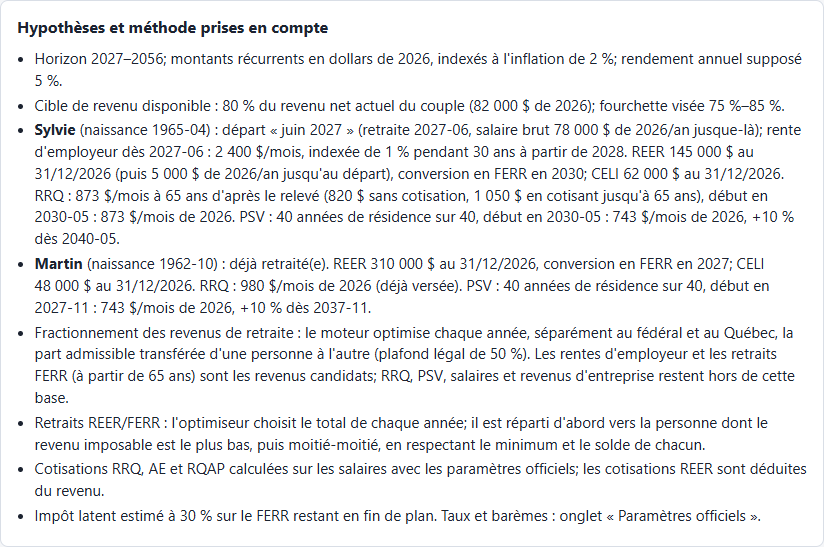
Graphiques
Répartition des ressources chaque année : d'où vient votre revenu (rentes, retraits REER/FERR, CELI…). Survolez une barre pour le détail ; le sélecteur affiche les montants en dollars de l'année ou en dollars de 2026.
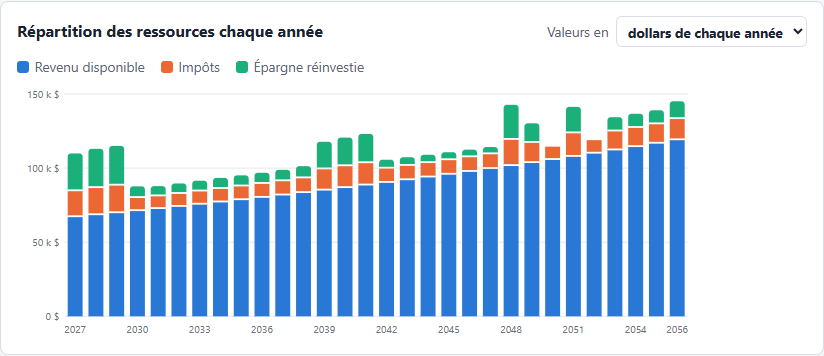
Épargne en fin d'année : l'évolution de vos REER/FERR, CELI et compte non enregistré.
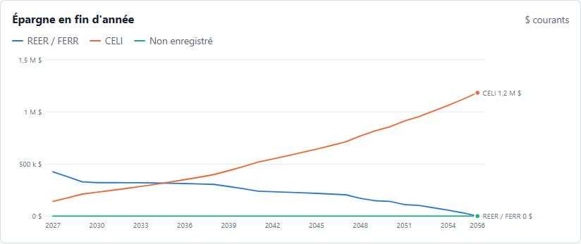
Tableau annuel
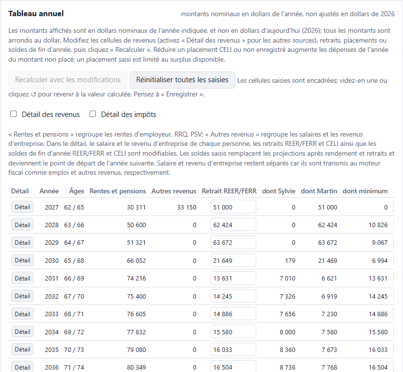
Une ligne par année, en dollars de l'année. Les cases Détail des revenus et Détail des impôts ajoutent des colonnes.
Vous pouvez modifier certaines cellules (salaire, retraits REER/FERR et CELI, placements, soldes de fin d'année réels), puis cliquer sur Recalculer avec les modifications. Les cellules modifiées sont encadrées ; Réinitialiser toutes les saisies revient au calcul optimisé. Le retrait minimum du FERR reste toujours appliqué.
Le bouton Détail d'une ligne ouvre la fiche de l'année : revenus, impôts, fractionnement, retraits, soldes et explications.
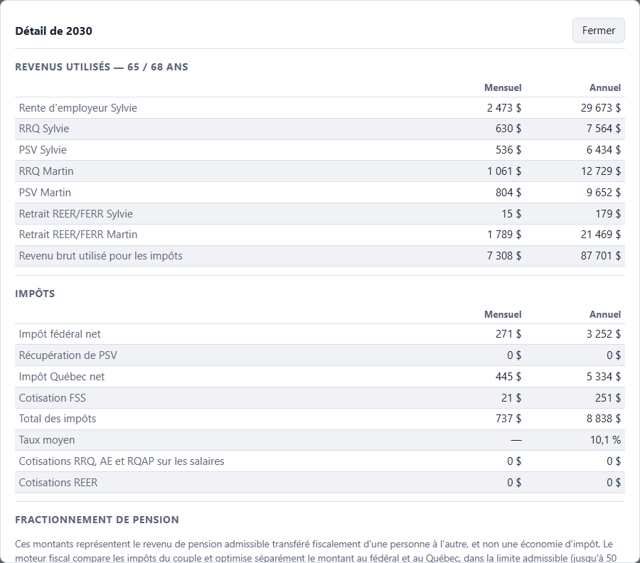
Raisonnement du décaissement
Pour chaque année, l'application explique d'où vient chaque revenu et pourquoi elle propose ces retraits et placements.
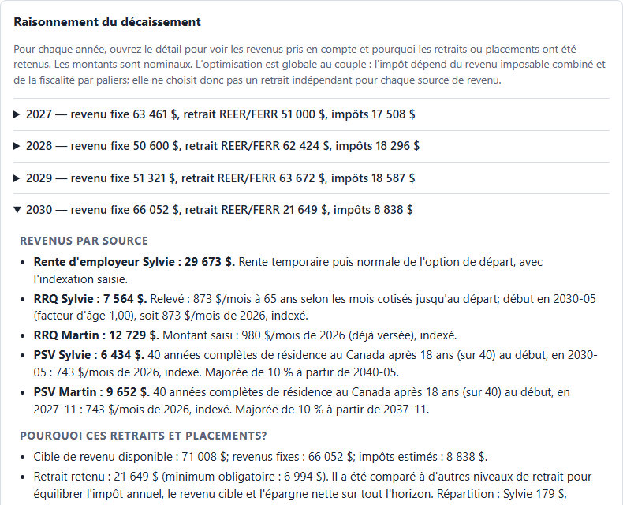
Sous les résultats, une mention rappelle que le plan est une estimation :
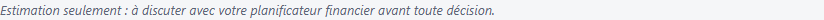
7. Comparer des scénarios
L'onglet Comparer des scénarios calcule plusieurs variantes de votre situation et les classe. Pour chaque personne, cochez les options de départ et les âges de début de la RRQ et de la PSV à comparer. Le nombre de variantes s'affiche à côté du bouton ; chacune prend de 5 à 20 secondes.
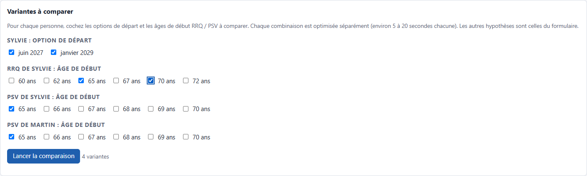
Cliquez sur Lancer la comparaison. Chaque variante est optimisée séparément, puis le tableau les compare :
- Impôts cumulés sur toute la période, en dollars de 2026 ;
- Épargne finale nette : ce qui reste à la fin du plan, après l'impôt latent sur le FERR, en dollars de 2026.
À revenu égal chaque année, la variante qui laisse la plus grande épargne finale nette est la plus avantageuse ; elle est marquée « meilleure épargne ». Sous le tableau, une carte par variante détaille les sources de revenu (pour une année choisie ou en moyenne).
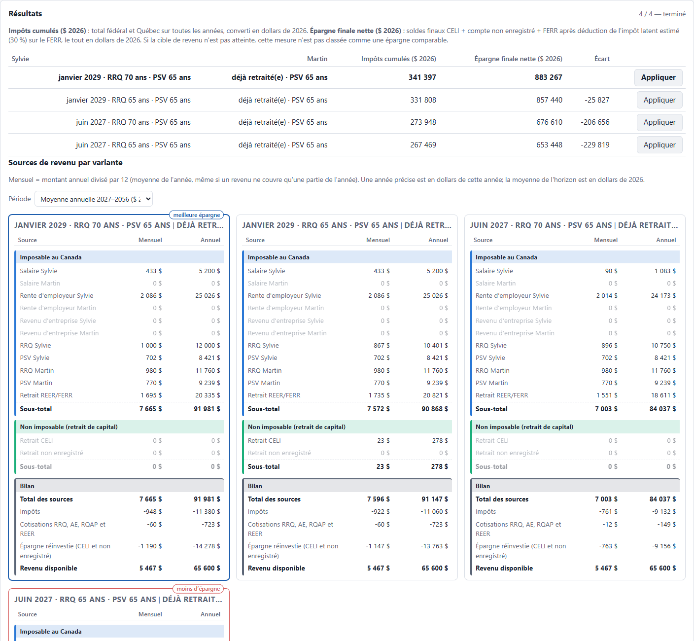
8. Enregistrer, exporter, sauvegarder
- Enregistrer : donnez un nom à la simulation. Pour garder plusieurs versions, enregistrez sous des noms différents (par exemple « Sylvie et Martin - variante »). Le menu Mes scénarios les rouvre.
- Au démarrage, l'application rouvre votre dernière simulation.
- Exporter CSV : télécharge le tableau annuel, à ouvrir dans Excel ou LibreOffice.
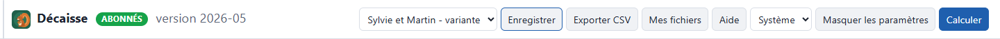
Où sont vos données ?
Uniquement sur votre ordinateur, dans le dossier C:\Users\votre nom\Documents\Plan de décaissement.
Le bouton Mes fichiers, en haut de l'écran, l'ouvre directement dans l'Explorateur. Il contient :
scenarios\: vos simulations (un fichier.jsonpar simulation) ;parametres\etpublication.json: les derniers paramètres officiels reçus ;activation.jsonetpreferences.json: l'activation et vos préférences.
Si votre dossier Documents est dans OneDrive : sur beaucoup d'ordinateurs récents, « Documents » dans l'Explorateur désigne en réalité un dossier OneDrive, copié dans le nuage. L'application, elle, enregistre volontairement vos simulations dans le dossier Documents local de votre ordinateur, qui n'est pas synchronisé : vos données financières ne quittent jamais votre ordinateur. C'est pourquoi vous ne les verrez peut-être pas en cliquant sur « Documents » : utilisez le bouton Mes fichiers.
Sauvegarde : copiez de temps en temps le dossier Documents\Plan de décaissement\scenarios sur une clé USB
ou dans votre sauvegarde habituelle. Pour transférer vos simulations sur un autre ordinateur, copiez ce dossier au même endroit.
9. Paramètres officiels
L'onglet Paramètres officiels affiche, pour chaque année, les valeurs utilisées : barèmes d'impôt fédéral et du Québec, cotisations, rentes maximales, PSV, retraits minimums du FERR… avec leurs sources. Ils sont en lecture seule et se mettent à jour automatiquement. L'onglet indique la date de réception des paramètres.
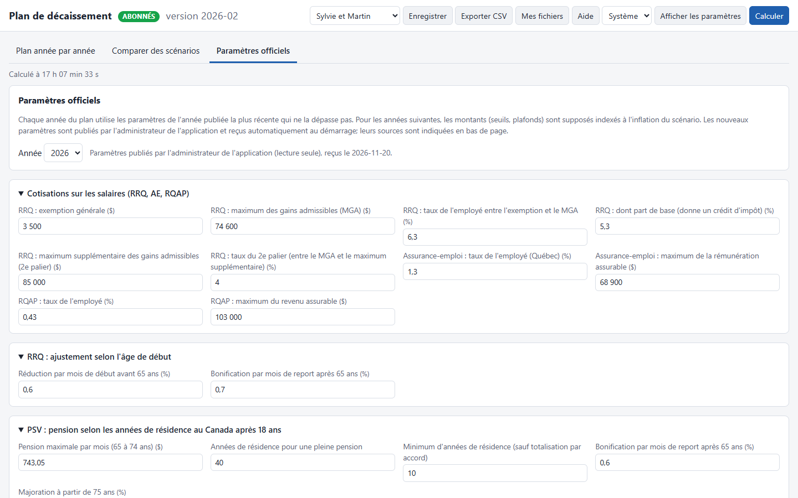
Pour les années dont les barèmes ne sont pas encore publiés, l'application utilise ceux de la dernière année connue, indexés selon l'inflation retenue.
10. Mises à jour
Les paramètres officiels
À chaque démarrage, l'application télécharge les derniers paramètres officiels publiés et vérifie leur signature numérique (un fichier modifié par quelqu'un d'autre serait refusé). Vous n'avez rien à faire. Sans connexion, elle utilise les derniers paramètres reçus et l'indique dans un bandeau.
Une nouvelle version de l'application
Quand une nouvelle version est disponible, un bandeau orange l'annonce en haut de l'écran, et un rappel « Mise à jour » apparaît à côté du numéro de version :
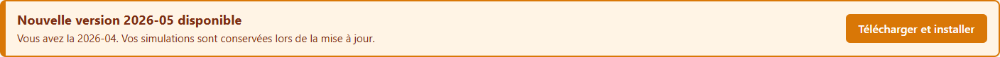
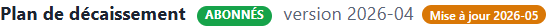
- Cliquez sur Télécharger et installer, puis confirmez. La page de téléchargement s'ouvre dans un
nouvel onglet et l'application se ferme d'elle-même (la fenêtre noire disparaît). L'onglet affiche
alors les étapes à suivre :
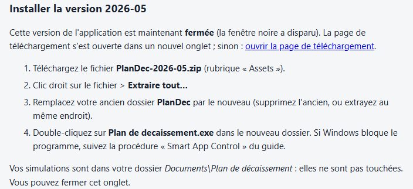
- Téléchargez le fichier PlanDec-…zip (rubrique « Assets » de la page).
- Supprimez l'ancien dossier PlanDec, puis extrayez le nouveau au même endroit (voir Installation).
- Lancez Plan de decaissement.exe dans le nouveau dossier. Si Windows le bloque, suivez la procédure Smart App Control.
Si l'ancienne version est encore ouverte quand vous lancez la nouvelle, celle-ci la ferme automatiquement : vous n'aurez jamais deux fenêtres noires.
Vos simulations ne sont pas touchées : elles sont dans votre dossier Documents local (bouton Mes fichiers), pas dans le dossier du programme. Vous n'aurez pas à refaire l'activation.
11. Si vous avez des revenus de France
Cette section concerne les personnes qui reçoivent (ou recevront) une pension de retraite française. Sinon, passez à la suite.
Dans la section Pension française du formulaire, saisissez pour chaque personne les montants mensuels en euros, avant impôt : la pension de base (CNAV) et la complémentaire (Agirc-Arrco), ainsi que le mois de début (vide = déjà versée).
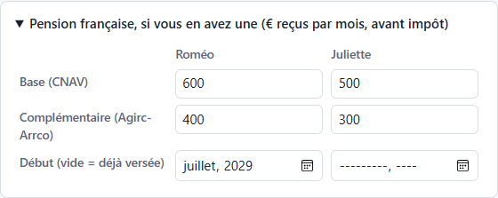
Dès qu'un montant est saisi, deux champs apparaissent dans les Hypothèses économiques : l'indexation des pensions françaises et le taux de change (combien de dollars pour un euro).
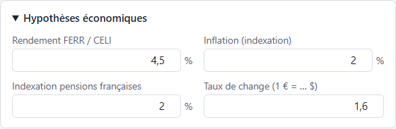
Selon la convention fiscale entre la France et le Canada, ces pensions sont imposées en France (retenue à la source des non-résidents) et exonérées au Canada, tout en comptant dans le revenu net qui sert à la PSV et à certains crédits. L'impôt français et la cotisation d'assurance maladie apparaissent à part dans la fiche annuelle et dans le tableau.
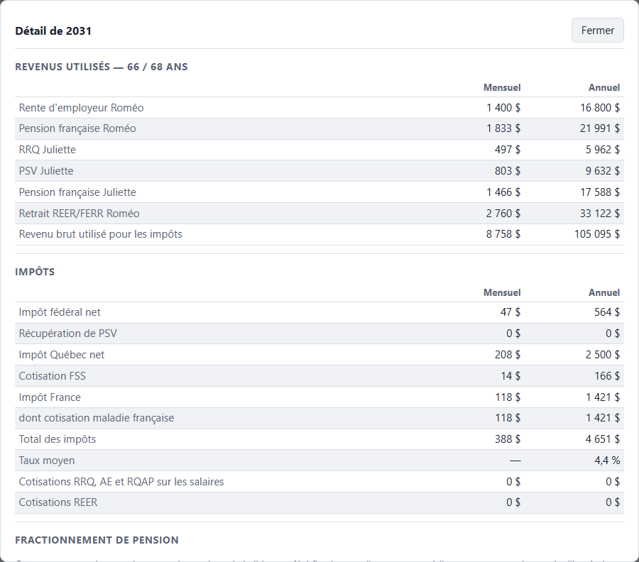
Les années passées en France peuvent aussi compter pour la PSV : cochez Accord de sécurité sociale dans la section PSV.
12. Confidentialité
- Vos données restent sur votre ordinateur. L'application fonctionne entièrement en local ; l'adresse
127.0.0.1n'est accessible que depuis votre ordinateur. - La seule communication par Internet est le téléchargement du fichier des paramètres officiels
(
https://pfaye0366.github.io/plan-decaissement/publication.json), à chaque démarrage. Comme pour toute page Web, le serveur qui l'héberge (GitHub) voit l'adresse IP de la connexion. - Rien n'est envoyé : ni vos simulations, ni votre courriel, ni votre code. L'activation se vérifie sur votre ordinateur, à partir d'une empreinte chiffrée.
- Le fichier téléchargé est signé numériquement : l'application refuse tout fichier qui ne vient pas de l'administrateur.
13. Dépannage
| Situation | Que faire |
|---|---|
| « Windows a protégé votre ordinateur » | Informations complémentaires, puis Exécuter quand même (voir Installation). |
| « Smart App Control a bloqué… », sans bouton pour continuer | Suspendez Smart App Control le temps du premier lancement, puis réactivez-le (voir la marche à suivre). |
| Votre antivirus bloque ou met en quarantaine le programme | Autorisez Plan de decaissement.exe dans votre antivirus, ou demandez de l'aide à la personne qui vous a invité. |
| Le navigateur ne s'ouvre pas | Ouvrez-le vous-même à l'adresse http://127.0.0.1:8770, tant que la fenêtre noire est ouverte. |
| « Ce site est inaccessible » dans le navigateur | La fenêtre noire a été fermée : relancez Plan de decaissement.exe. |
| La fenêtre noire se ferme aussitôt ou affiche une erreur | Le programme est peut-être déjà ouvert : fermez toutes ses fenêtres noires et relancez-le. Sinon, notez le message et transmettez-le. |
| « Courriel ou code d'activation non reconnu » | Vérifiez le courriel et le code de votre invitation (le code a la forme ABCD-2345). |
| « Impossible de joindre le serveur de publication » | Vérifiez votre connexion Internet, puis réessayez. La connexion n'est nécessaire qu'à l'activation. |
| « Chemin d'accès trop long » pendant l'extraction | Extrayez dans un dossier au nom court, par exemple C:\PlanDec ou directement dans Documents (Windows limite la longueur des chemins). |
| Bandeau « Hors connexion » | Rien à faire : l'application utilise les derniers paramètres reçus. |
| Bandeau « accès aux mises à jour retiré » | L'application et vos simulations restent utilisables, sans nouvelles mises à jour. |
| Le calcul est long | Le premier calcul prend 30 à 60 secondes ; une comparaison, de 5 à 20 secondes par variante. |
| Message rouge « À compléter » | Il indique l'information manquante ou incorrecte ; corrigez-la et le calcul repart. |
14. Limites du modèle
Le modèle simplifie la réalité. Gardez en tête notamment :
- Le Supplément de revenu garanti (SRG) et l'allocation au survivant ne sont pas calculés.
- Le décès d'un conjoint (rente de conjoint survivant, transfert du FERR) n'est pas modélisé.
- Les CRI et FRV (fonds immobilisés, avec un retrait maximum) ne sont pas distingués des REER/FERR.
- Les placements non enregistrés sont imposés à un taux forfaitaire : gains en capital et dividendes ne sont pas distingués.
- Le rendement est constant chaque année : les variations des marchés ne sont pas simulées.
- Les barèmes des années futures sont ceux de la dernière année publiée, indexés selon l'inflation retenue.
- Les cotisations RRQ sur un revenu d'entreprise ne sont pas calculées.
- Les droits CELI inutilisés sont ceux que vous saisissez.
Ces limites sont une raison de plus pour valider vos décisions avec votre planificateur financier.
15. Sources et références
Paramètres officiels
Les valeurs de l'onglet Paramètres officiels proviennent des publications suivantes :
Année 2026
- Revenu Québec - Maximum des gains admissibles et taux de cotisation au RRQ (2026)
- Revenu Québec - Maximum de revenus assurables et taux de cotisation au RQAP (2026)
- EDSC - Taux de cotisation à l'assurance-emploi de 2026
- Minimums FERR : art. 7308 du Règlement de l'impôt sur le revenu (tableau CQFF).
- Canada.ca - Montant des paiements de la Sécurité de la vieillesse (avril à juin 2026)
- ARC - Indexation des montants (2023-2026)
- Finances Québec - Paramètres du régime d'imposition des particuliers 2026
- Validation croisée : RCGT, Impôt des particuliers Québec 2026 (tableaux P1-P4, mise à jour 30 avril 2026)
Calcul des impôts
- Impôts fédéral et du Québec : moteur de calcul propre à l'application, appliquant les barèmes, crédits (âge, revenus de pension, personne vivant seule, conjoint), fractionnement du revenu de pension, récupération de la PSV et cotisation au Fonds des services de santé (FSS), à partir des sources ci-dessus. Résultats contrôlés contre les tables d'impôt de Raymond Chabot Grant Thornton (écart d'au plus 1 $).
- Impôt français : OpenFisca-France, le modèle de calcul ouvert de la législation française, complété pour les non-résidents (retenue à la source, art. 182 A et 197 A du Code général des impôts ; BOFiP BOI-BAREME-000043 ; pages « non-résidents » d'impots.gouv.fr).
- Convention fiscale France–Canada (article 18, pensions), Finances Canada.
- Retrait minimum des FERR : article 7308 du Règlement de l'impôt sur le revenu.
Services en ligne utilisés
- GitHub Pages : hébergement du fichier signé des paramètres officiels (
https://pfaye0366.github.io/plan-decaissement/publication.json), lu au démarrage. - GitHub Releases : téléchargement de l'application (https://github.com/pfaye0366/plan-decaissement/releases/latest).
L'application n'utilise aucune autre API ni aucun autre service : pas de taux de change en ligne (vous le saisissez), pas de statistiques d'utilisation, pas de publicité.
Logiciels libres inclus
L'application est construite avec les logiciels suivants, chacun sous sa propre licence :
| Logiciel | Version | Licence |
|---|---|---|
| Python | 3.13.9 | Python Software Foundation License |
| OpenFisca-Core | 44.7.1 | AGPL-3.0 |
| OpenFisca-France | 176.1.2 | AGPL-3.0 |
| NumPy | 2.3.5 | BSD-3-Clause |
| Flask | 3.1.3 | BSD-3-Clause |
| Werkzeug | 3.1.9 | BSD-3-Clause |
| Jinja2 | 3.1.6 | BSD-3-Clause |
| cryptography | 50.0.2 | Apache-2.0 ou BSD-3-Clause |
| PyInstaller | 6.16.0 | GPL-2.0 avec exception pour les programmes distribués |
16. Glossaire
- CELI — compte d'épargne libre d'impôt
- Les rendements et les retraits ne sont pas imposés. Les retraits n'influencent ni la PSV ni les crédits d'impôt.
- REER — régime enregistré d'épargne-retraite
- Les cotisations sont déductibles ; les retraits sont imposables.
- FERR — fonds enregistré de revenu de retraite
- Ce que devient le REER (au plus tard à 71 ans). Un retrait minimum, fixé par la loi selon l'âge, est obligatoire chaque année.
- CRI / FRV
- Compte de retraite immobilisé et fonds de revenu viager : épargne de retraite « immobilisée » provenant d'un régime d'employeur, avec un retrait maximum.
- RRQ — Régime de rentes du Québec
- Rente publique liée à vos années de travail. Elle peut commencer entre 60 et 72 ans.
- PSV — pension de la Sécurité de la vieillesse
- Pension fédérale liée aux années de résidence au Canada, de 65 à 70 ans, majorée de 10 % à 75 ans.
- Récupération de la PSV
- Remboursement de tout ou partie de la PSV quand le revenu net dépasse un seuil (environ 95 000 $ en 2026).
- SRG — Supplément de revenu garanti
- Prestation fédérale pour les retraités à faible revenu (non calculée par l'application).
- Fractionnement du revenu de pension
- Transfert fiscal, entre conjoints, d'une partie (jusqu'à 50 %) des revenus de pension admissibles, pour réduire l'impôt du couple.
- Rente temporaire (prestation de raccordement)
- Supplément versé par certains régimes d'employeur entre la retraite et 65 ans environ.
- FSS — Fonds des services de santé
- Cotisation québécoise payée par les particuliers sur certains revenus autres que d'emploi.
- Impôt latent
- Impôt qui sera dû un jour sur une somme encore à l'abri (par exemple le solde d'un FERR).
- Dollars de 2026 / dollars courants
- Les dollars de 2026 retirent l'effet de l'inflation pour comparer des années différentes ; les dollars courants sont les montants réellement versés l'année indiquée.